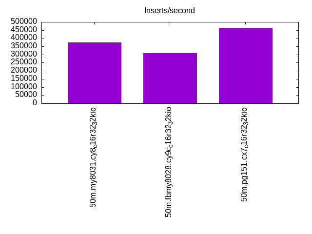
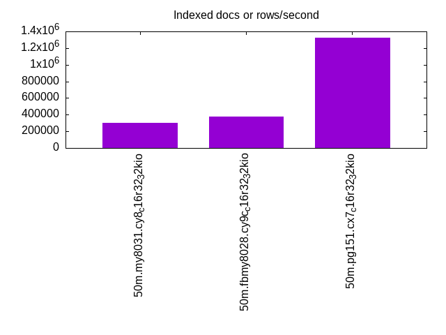
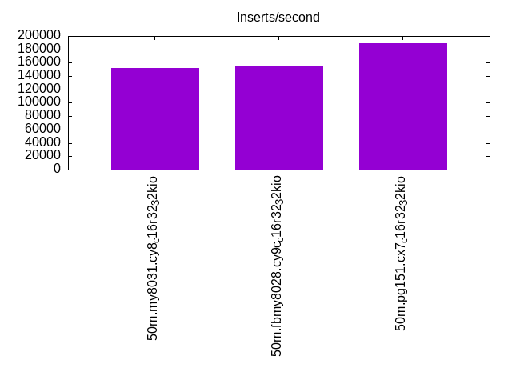
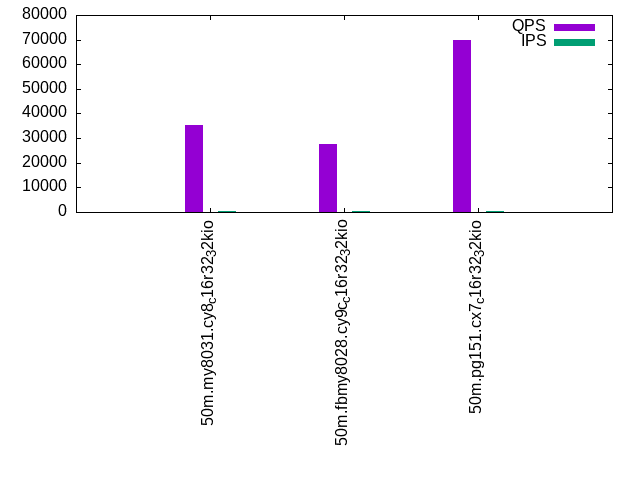
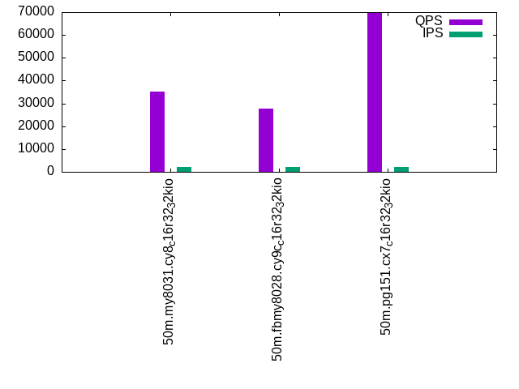
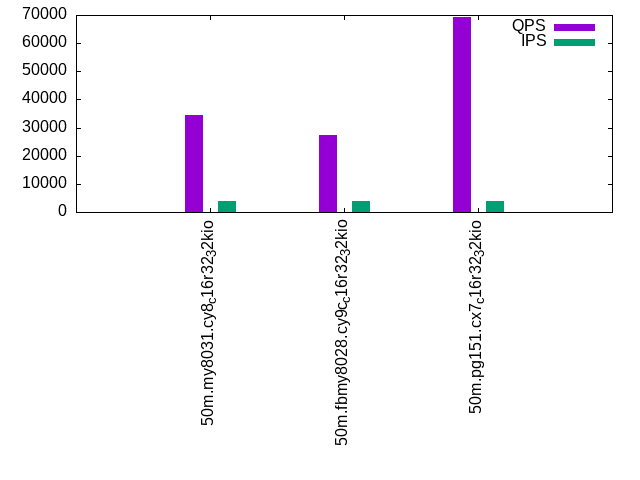

This is a report for the insert benchmark with 50M docs and 4 client(s). It is generated by scripts (bash, awk, sed) and Tufte might not be impressed. An overview of the insert benchmark is here and a short update is here. Below, by DBMS, I mean DBMS+version.config. An example is my8020.c10b40 where my means MySQL, 8020 is version 8.0.20 and c10b40 is the name for the configuration file.
The test server is an c6i.4xl with 8 cores, 8 HW threads (hyperthread disabled), 32G RAM and io2 storage (1T, 32K IOPs). The benchmark was run with 4 clients and there was 1 or 2 connections per client (1 for queries, 1 for inserts). The benchmark loads 25M rows without secondary indexes, creates secondary indexes, loads another 25M rows then does 3 read+write tests for one hour each that do queries as fast as possible with 100, 500 and then 1000 writes/second/client concurrent with the queries. The database is cached by the storage engine and the only IO is for writes. Clients and the DBMS share one server. The per-database configs are in the per-database subdirectories here.
The tested DBMS are:
The numbers are inserts/s for l.i0 and l.i1, indexed docs (or rows) /s for l.x and queries/s for q*.2. The values are the average rate over the entire test for inserts (IPS) and queries (QPS). The range of values for IPS and QPS is split into 3 parts: bottom 25%, middle 50%, top 25%. Values in the bottom 25% have a red background, values in the top 25% have a green background and values in the middle have no color. A gray background is used for values that can be ignored because the DBMS did not sustain the target insert rate. Red backgrounds are not used when the minimum value is within 80% of the max value.
| dbms | l.i0 | l.x | l.i1 | q100.1 | q500.1 | q1000.1 |
|---|---|---|---|---|---|---|
| 50m.my8031.cy8_c16r32_32kio | 373134 | 302410 | 151515 | 35396 | 35065 | 34601 |
| 50m.fbmy8028.cy9c_c16r32_32kio | 308642 | 380303 | 155280 | 27738 | 27554 | 27254 |
| 50m.pg151.cx7_c16r32_32kio | 462963 | 1321053 | 189394 | 70049 | 69632 | 69440 |
This lists the average rate of inserts/s for the tests that do inserts concurrent with queries. For such tests the query rate is listed in the table above. The read+write tests are setup so that the insert rate should match the target rate every second. Cells that are not at least 95% of the target have a red background to indicate a failure to satisfy the target.
| dbms | q100.1 | q500.1 | q1000.1 |
|---|---|---|---|
| my8031.cy8_c16r32_32kio | 399 | 1996 | 3992 |
| fbmy8028.cy9c_c16r32_32kio | 399 | 1996 | 3991 |
| pg151.cx7_c16r32_32kio | 399 | 1996 | 3991 |
| target | 400 | 2000 | 4000 |
l.i0: load without secondary indexes. Graphs for performance per 1-second interval are here.
Average throughput:
Insert response time histogram: each cell has the percentage of responses that take <= the time in the header and max is the max response time in seconds. For the max column values in the top 25% of the range have a red background and in the bottom 25% of the range have a green background. The red background is not used when the min value is within 80% of the max value.
| dbms | 256us | 1ms | 4ms | 16ms | 64ms | 256ms | 1s | 4s | 16s | gt | max |
|---|---|---|---|---|---|---|---|---|---|---|---|
| my8031.cy8_c16r32_32kio | 94.723 | 5.090 | 0.162 | 0.026 | 0.063 | ||||||
| fbmy8028.cy9c_c16r32_32kio | 39.001 | 60.861 | 0.122 | 0.012 | 0.003 | 0.107 | |||||
| pg151.cx7_c16r32_32kio | 99.392 | 0.605 | 0.004 | 0.006 |
Performance metrics for the DBMS listed above. Some are normalized by throughput, others are not. Legend for results is here.
ips qps rps rmbps wps wmbps rpq rkbpq wpi wkbpi csps cpups cspq cpupq dbgb1 dbgb2 rss maxop p50 p99 tag 373134 0 0 0.0 513.2 95.7 0.000 0.000 0.001 0.263 60003 69.1 0.161 15 1.7 66.2 4.0 0.063 117973 81213 50m.my8031.cy8_c16r32_32kio 308642 0 0 0.0 417.7 93.4 0.000 0.000 0.001 0.310 30820 59.8 0.100 16 0.8 2.3 0.9 0.107 88630 18280 50m.fbmy8028.cy9c_c16r32_32kio 462963 0 0 0.0 866.2 198.6 0.000 0.000 0.002 0.439 51122 61.5 0.110 11 2.4 6.5 0.0 0.006 152337 92301 50m.pg151.cx7_c16r32_32kio
l.x: create secondary indexes.
Average throughput:
Performance metrics for the DBMS listed above. Some are normalized by throughput, others are not. Legend for results is here.
ips qps rps rmbps wps wmbps rpq rkbpq wpi wkbpi csps cpups cspq cpupq dbgb1 dbgb2 rss maxop p50 p99 tag 302410 0 1650 108.5 6057.2 295.7 0.005 0.367 0.020 1.001 29381 30.6 0.097 8 3.7 68.3 5.5 0.015 NA NA 50m.my8031.cy8_c16r32_32kio 380303 0 1 0.0 265.0 60.4 0.000 0.000 0.001 0.163 1158 45.9 0.003 10 1.7 3.2 2.6 0.002 NA NA 50m.fbmy8028.cy9c_c16r32_32kio 1321053 0 0 0.0 1237.5 302.4 0.000 0.000 0.001 0.234 4642 37.8 0.004 2 4.6 10.7 0.0 0.002 NA NA 50m.pg151.cx7_c16r32_32kio
l.i1: continue load after secondary indexes created. Graphs for performance per 1-second interval are here.
Average throughput:
Insert response time histogram: each cell has the percentage of responses that take <= the time in the header and max is the max response time in seconds. For the max column values in the top 25% of the range have a red background and in the bottom 25% of the range have a green background. The red background is not used when the min value is within 80% of the max value.
| dbms | 256us | 1ms | 4ms | 16ms | 64ms | 256ms | 1s | 4s | 16s | gt | max |
|---|---|---|---|---|---|---|---|---|---|---|---|
| my8031.cy8_c16r32_32kio | 0.001 | 99.495 | 0.372 | 0.117 | 0.015 | 0.117 | |||||
| fbmy8028.cy9c_c16r32_32kio | 10.129 | 89.579 | 0.282 | 0.008 | nonzero | 0.065 | |||||
| pg151.cx7_c16r32_32kio | 63.616 | 36.380 | 0.003 | 0.008 |
Performance metrics for the DBMS listed above. Some are normalized by throughput, others are not. Legend for results is here.
ips qps rps rmbps wps wmbps rpq rkbpq wpi wkbpi csps cpups cspq cpupq dbgb1 dbgb2 rss maxop p50 p99 tag 151515 0 694 10.8 1454.8 130.4 0.005 0.073 0.010 0.881 59986 65.8 0.396 35 9.9 74.5 11.3 0.117 41605 899 50m.my8031.cy8_c16r32_32kio 155280 0 47 5.8 667.8 151.4 0.000 0.038 0.004 0.998 34465 71.3 0.222 37 4.6 5.5 3.3 0.065 41267 19529 50m.fbmy8028.cy9c_c16r32_32kio 189394 0 0 0.0 885.9 202.8 0.000 0.000 0.005 1.097 42821 58.8 0.226 25 9.9 26.4 0.0 0.008 49547 16682 50m.pg151.cx7_c16r32_32kio
q100.1: range queries with 100 insert/s per client. Graphs for performance per 1-second interval are here.
Average throughput:
Query response time histogram: each cell has the percentage of responses that take <= the time in the header and max is the max response time in seconds. For max values in the top 25% of the range have a red background and in the bottom 25% of the range have a green background. The red background is not used when the min value is within 80% of the max value.
| dbms | 256us | 1ms | 4ms | 16ms | 64ms | 256ms | 1s | 4s | 16s | gt | max |
|---|---|---|---|---|---|---|---|---|---|---|---|
| my8031.cy8_c16r32_32kio | 99.989 | 0.010 | 0.001 | nonzero | 0.011 | ||||||
| fbmy8028.cy9c_c16r32_32kio | 99.971 | 0.028 | 0.001 | nonzero | nonzero | 0.020 | |||||
| pg151.cx7_c16r32_32kio | 99.996 | 0.003 | 0.001 | nonzero | 0.006 |
Insert response time histogram: each cell has the percentage of responses that take <= the time in the header and max is the max response time in seconds. For max values in the top 25% of the range have a red background and in the bottom 25% of the range have a green background. The red background is not used when the min value is within 80% of the max value.
| dbms | 256us | 1ms | 4ms | 16ms | 64ms | 256ms | 1s | 4s | 16s | gt | max |
|---|---|---|---|---|---|---|---|---|---|---|---|
| my8031.cy8_c16r32_32kio | 99.281 | 0.719 | 0.010 | ||||||||
| fbmy8028.cy9c_c16r32_32kio | 10.042 | 89.955 | 0.003 | 0.006 | |||||||
| pg151.cx7_c16r32_32kio | 99.976 | 0.024 | 0.005 |
Performance metrics for the DBMS listed above. Some are normalized by throughput, others are not. Legend for results is here.
ips qps rps rmbps wps wmbps rpq rkbpq wpi wkbpi csps cpups cspq cpupq dbgb1 dbgb2 rss maxop p50 p99 tag 399 35396 0 0.0 126.7 3.4 0.000 0.000 0.317 8.625 136213 48.7 3.848 110 10.7 75.3 12.0 0.011 8870 8551 50m.my8031.cy8_c16r32_32kio 399 27738 0 0.0 7.5 1.1 0.000 0.000 0.019 2.791 106277 49.7 3.831 143 3.7 4.7 6.2 0.020 6921 6505 50m.fbmy8028.cy9c_c16r32_32kio 399 70049 0 0.0 475.5 15.0 0.000 0.000 1.192 38.473 267809 46.6 3.823 53 10.4 24.9 0.0 0.006 17682 17006 50m.pg151.cx7_c16r32_32kio
q500.1: range queries with 500 insert/s per client. Graphs for performance per 1-second interval are here.
Average throughput:
Query response time histogram: each cell has the percentage of responses that take <= the time in the header and max is the max response time in seconds. For max values in the top 25% of the range have a red background and in the bottom 25% of the range have a green background. The red background is not used when the min value is within 80% of the max value.
| dbms | 256us | 1ms | 4ms | 16ms | 64ms | 256ms | 1s | 4s | 16s | gt | max |
|---|---|---|---|---|---|---|---|---|---|---|---|
| my8031.cy8_c16r32_32kio | 99.981 | 0.014 | 0.005 | nonzero | 0.009 | ||||||
| fbmy8028.cy9c_c16r32_32kio | 99.941 | 0.054 | 0.005 | nonzero | nonzero | 0.025 | |||||
| pg151.cx7_c16r32_32kio | 99.980 | 0.010 | 0.010 | nonzero | 0.009 |
Insert response time histogram: each cell has the percentage of responses that take <= the time in the header and max is the max response time in seconds. For max values in the top 25% of the range have a red background and in the bottom 25% of the range have a green background. The red background is not used when the min value is within 80% of the max value.
| dbms | 256us | 1ms | 4ms | 16ms | 64ms | 256ms | 1s | 4s | 16s | gt | max |
|---|---|---|---|---|---|---|---|---|---|---|---|
| my8031.cy8_c16r32_32kio | 98.856 | 1.144 | 0.001 | 0.023 | |||||||
| fbmy8028.cy9c_c16r32_32kio | 23.371 | 76.449 | 0.178 | 0.002 | 0.021 | ||||||
| pg151.cx7_c16r32_32kio | 1.351 | 98.303 | 0.346 | 0.013 |
Performance metrics for the DBMS listed above. Some are normalized by throughput, others are not. Legend for results is here.
ips qps rps rmbps wps wmbps rpq rkbpq wpi wkbpi csps cpups cspq cpupq dbgb1 dbgb2 rss maxop p50 p99 tag 1996 35065 0 0.0 26.2 1.5 0.000 0.000 0.013 0.781 134524 49.3 3.836 112 12.1 76.7 13.3 0.009 8791 8663 50m.my8031.cy8_c16r32_32kio 1996 27554 0 0.0 17.1 3.3 0.000 0.000 0.009 1.675 105524 50.6 3.830 147 4.1 6.1 14.2 0.025 6843 6219 50m.fbmy8028.cy9c_c16r32_32kio 1996 69632 0 0.0 640.1 30.2 0.000 0.000 0.321 15.522 266162 47.1 3.822 54 13.2 23.1 0.0 0.009 17326 17085 50m.pg151.cx7_c16r32_32kio
q1000.1: range queries with 1000 insert/s per client. Graphs for performance per 1-second interval are here.
Average throughput:
Query response time histogram: each cell has the percentage of responses that take <= the time in the header and max is the max response time in seconds. For max values in the top 25% of the range have a red background and in the bottom 25% of the range have a green background. The red background is not used when the min value is within 80% of the max value.
| dbms | 256us | 1ms | 4ms | 16ms | 64ms | 256ms | 1s | 4s | 16s | gt | max |
|---|---|---|---|---|---|---|---|---|---|---|---|
| my8031.cy8_c16r32_32kio | 99.973 | 0.021 | 0.006 | nonzero | 0.015 | ||||||
| fbmy8028.cy9c_c16r32_32kio | 99.912 | 0.080 | 0.008 | nonzero | nonzero | 0.028 | |||||
| pg151.cx7_c16r32_32kio | 99.960 | 0.023 | 0.016 | nonzero | 0.012 |
Insert response time histogram: each cell has the percentage of responses that take <= the time in the header and max is the max response time in seconds. For max values in the top 25% of the range have a red background and in the bottom 25% of the range have a green background. The red background is not used when the min value is within 80% of the max value.
| dbms | 256us | 1ms | 4ms | 16ms | 64ms | 256ms | 1s | 4s | 16s | gt | max |
|---|---|---|---|---|---|---|---|---|---|---|---|
| my8031.cy8_c16r32_32kio | 99.171 | 0.824 | 0.005 | 0.030 | |||||||
| fbmy8028.cy9c_c16r32_32kio | 24.122 | 75.406 | 0.466 | 0.006 | 0.025 | ||||||
| pg151.cx7_c16r32_32kio | 11.890 | 87.452 | 0.657 | 0.001 | 0.017 |
Performance metrics for the DBMS listed above. Some are normalized by throughput, others are not. Legend for results is here.
ips qps rps rmbps wps wmbps rpq rkbpq wpi wkbpi csps cpups cspq cpupq dbgb1 dbgb2 rss maxop p50 p99 tag 3992 34601 0 0.0 186.6 6.0 0.000 0.000 0.047 1.550 132956 50.0 3.843 116 13.2 77.8 14.3 0.015 8668 8519 50m.my8031.cy8_c16r32_32kio 3991 27254 1 0.1 31.6 6.5 0.000 0.005 0.008 1.680 104287 51.7 3.826 152 5.2 7.0 21.2 0.028 6841 6185 50m.fbmy8028.cy9c_c16r32_32kio 3991 69440 0 0.0 689.4 42.8 0.000 0.000 0.173 10.985 264944 47.8 3.815 55 15.5 28.0 0.0 0.012 17309 16654 50m.pg151.cx7_c16r32_32kio
l.i0: load without secondary indexes
Performance metrics for all DBMS, not just the ones listed above. Some are normalized by throughput, others are not. Legend for results is here.
ips qps rps rmbps wps wmbps rpq rkbpq wpi wkbpi csps cpups cspq cpupq dbgb1 dbgb2 rss maxop p50 p99 tag 373134 0 0 0.0 513.2 95.7 0.000 0.000 0.001 0.263 60003 69.1 0.161 15 1.7 66.2 4.0 0.063 117973 81213 50m.my8031.cy8_c16r32_32kio 308642 0 0 0.0 417.7 93.4 0.000 0.000 0.001 0.310 30820 59.8 0.100 16 0.8 2.3 0.9 0.107 88630 18280 50m.fbmy8028.cy9c_c16r32_32kio 462963 0 0 0.0 866.2 198.6 0.000 0.000 0.002 0.439 51122 61.5 0.110 11 2.4 6.5 0.0 0.006 152337 92301 50m.pg151.cx7_c16r32_32kio
l.x: create secondary indexes
Performance metrics for all DBMS, not just the ones listed above. Some are normalized by throughput, others are not. Legend for results is here.
ips qps rps rmbps wps wmbps rpq rkbpq wpi wkbpi csps cpups cspq cpupq dbgb1 dbgb2 rss maxop p50 p99 tag 302410 0 1650 108.5 6057.2 295.7 0.005 0.367 0.020 1.001 29381 30.6 0.097 8 3.7 68.3 5.5 0.015 NA NA 50m.my8031.cy8_c16r32_32kio 380303 0 1 0.0 265.0 60.4 0.000 0.000 0.001 0.163 1158 45.9 0.003 10 1.7 3.2 2.6 0.002 NA NA 50m.fbmy8028.cy9c_c16r32_32kio 1321053 0 0 0.0 1237.5 302.4 0.000 0.000 0.001 0.234 4642 37.8 0.004 2 4.6 10.7 0.0 0.002 NA NA 50m.pg151.cx7_c16r32_32kio
l.i1: continue load after secondary indexes created
Performance metrics for all DBMS, not just the ones listed above. Some are normalized by throughput, others are not. Legend for results is here.
ips qps rps rmbps wps wmbps rpq rkbpq wpi wkbpi csps cpups cspq cpupq dbgb1 dbgb2 rss maxop p50 p99 tag 151515 0 694 10.8 1454.8 130.4 0.005 0.073 0.010 0.881 59986 65.8 0.396 35 9.9 74.5 11.3 0.117 41605 899 50m.my8031.cy8_c16r32_32kio 155280 0 47 5.8 667.8 151.4 0.000 0.038 0.004 0.998 34465 71.3 0.222 37 4.6 5.5 3.3 0.065 41267 19529 50m.fbmy8028.cy9c_c16r32_32kio 189394 0 0 0.0 885.9 202.8 0.000 0.000 0.005 1.097 42821 58.8 0.226 25 9.9 26.4 0.0 0.008 49547 16682 50m.pg151.cx7_c16r32_32kio
q100.1: range queries with 100 insert/s per client
Performance metrics for all DBMS, not just the ones listed above. Some are normalized by throughput, others are not. Legend for results is here.
ips qps rps rmbps wps wmbps rpq rkbpq wpi wkbpi csps cpups cspq cpupq dbgb1 dbgb2 rss maxop p50 p99 tag 399 35396 0 0.0 126.7 3.4 0.000 0.000 0.317 8.625 136213 48.7 3.848 110 10.7 75.3 12.0 0.011 8870 8551 50m.my8031.cy8_c16r32_32kio 399 27738 0 0.0 7.5 1.1 0.000 0.000 0.019 2.791 106277 49.7 3.831 143 3.7 4.7 6.2 0.020 6921 6505 50m.fbmy8028.cy9c_c16r32_32kio 399 70049 0 0.0 475.5 15.0 0.000 0.000 1.192 38.473 267809 46.6 3.823 53 10.4 24.9 0.0 0.006 17682 17006 50m.pg151.cx7_c16r32_32kio
q500.1: range queries with 500 insert/s per client
Performance metrics for all DBMS, not just the ones listed above. Some are normalized by throughput, others are not. Legend for results is here.
ips qps rps rmbps wps wmbps rpq rkbpq wpi wkbpi csps cpups cspq cpupq dbgb1 dbgb2 rss maxop p50 p99 tag 1996 35065 0 0.0 26.2 1.5 0.000 0.000 0.013 0.781 134524 49.3 3.836 112 12.1 76.7 13.3 0.009 8791 8663 50m.my8031.cy8_c16r32_32kio 1996 27554 0 0.0 17.1 3.3 0.000 0.000 0.009 1.675 105524 50.6 3.830 147 4.1 6.1 14.2 0.025 6843 6219 50m.fbmy8028.cy9c_c16r32_32kio 1996 69632 0 0.0 640.1 30.2 0.000 0.000 0.321 15.522 266162 47.1 3.822 54 13.2 23.1 0.0 0.009 17326 17085 50m.pg151.cx7_c16r32_32kio
q1000.1: range queries with 1000 insert/s per client
Performance metrics for all DBMS, not just the ones listed above. Some are normalized by throughput, others are not. Legend for results is here.
ips qps rps rmbps wps wmbps rpq rkbpq wpi wkbpi csps cpups cspq cpupq dbgb1 dbgb2 rss maxop p50 p99 tag 3992 34601 0 0.0 186.6 6.0 0.000 0.000 0.047 1.550 132956 50.0 3.843 116 13.2 77.8 14.3 0.015 8668 8519 50m.my8031.cy8_c16r32_32kio 3991 27254 1 0.1 31.6 6.5 0.000 0.005 0.008 1.680 104287 51.7 3.826 152 5.2 7.0 21.2 0.028 6841 6185 50m.fbmy8028.cy9c_c16r32_32kio 3991 69440 0 0.0 689.4 42.8 0.000 0.000 0.173 10.985 264944 47.8 3.815 55 15.5 28.0 0.0 0.012 17309 16654 50m.pg151.cx7_c16r32_32kio
Insert response time histogram
256us 1ms 4ms 16ms 64ms 256ms 1s 4s 16s gt max tag 0.000 94.723 5.090 0.162 0.026 0.000 0.000 0.000 0.000 0.000 0.063 my8031.cy8_c16r32_32kio 0.000 39.001 60.861 0.122 0.012 0.003 0.000 0.000 0.000 0.000 0.107 fbmy8028.cy9c_c16r32_32kio 0.000 99.392 0.605 0.004 0.000 0.000 0.000 0.000 0.000 0.000 0.006 pg151.cx7_c16r32_32kio
TODO - determine whether there is data for create index response time
Insert response time histogram
256us 1ms 4ms 16ms 64ms 256ms 1s 4s 16s gt max tag 0.000 0.001 99.495 0.372 0.117 0.015 0.000 0.000 0.000 0.000 0.117 my8031.cy8_c16r32_32kio 0.000 10.129 89.579 0.282 0.008 nonzero 0.000 0.000 0.000 0.000 0.065 fbmy8028.cy9c_c16r32_32kio 0.000 63.616 36.380 0.003 0.000 0.000 0.000 0.000 0.000 0.000 0.008 pg151.cx7_c16r32_32kio
Query response time histogram
256us 1ms 4ms 16ms 64ms 256ms 1s 4s 16s gt max tag 99.989 0.010 0.001 nonzero 0.000 0.000 0.000 0.000 0.000 0.000 0.011 my8031.cy8_c16r32_32kio 99.971 0.028 0.001 nonzero nonzero 0.000 0.000 0.000 0.000 0.000 0.020 fbmy8028.cy9c_c16r32_32kio 99.996 0.003 0.001 nonzero 0.000 0.000 0.000 0.000 0.000 0.000 0.006 pg151.cx7_c16r32_32kio
Insert response time histogram
256us 1ms 4ms 16ms 64ms 256ms 1s 4s 16s gt max tag 0.000 0.000 99.281 0.719 0.000 0.000 0.000 0.000 0.000 0.000 0.010 my8031.cy8_c16r32_32kio 0.000 10.042 89.955 0.003 0.000 0.000 0.000 0.000 0.000 0.000 0.006 fbmy8028.cy9c_c16r32_32kio 0.000 0.000 99.976 0.024 0.000 0.000 0.000 0.000 0.000 0.000 0.005 pg151.cx7_c16r32_32kio
Query response time histogram
256us 1ms 4ms 16ms 64ms 256ms 1s 4s 16s gt max tag 99.981 0.014 0.005 nonzero 0.000 0.000 0.000 0.000 0.000 0.000 0.009 my8031.cy8_c16r32_32kio 99.941 0.054 0.005 nonzero nonzero 0.000 0.000 0.000 0.000 0.000 0.025 fbmy8028.cy9c_c16r32_32kio 99.980 0.010 0.010 nonzero 0.000 0.000 0.000 0.000 0.000 0.000 0.009 pg151.cx7_c16r32_32kio
Insert response time histogram
256us 1ms 4ms 16ms 64ms 256ms 1s 4s 16s gt max tag 0.000 0.000 98.856 1.144 0.001 0.000 0.000 0.000 0.000 0.000 0.023 my8031.cy8_c16r32_32kio 0.000 23.371 76.449 0.178 0.002 0.000 0.000 0.000 0.000 0.000 0.021 fbmy8028.cy9c_c16r32_32kio 0.000 1.351 98.303 0.346 0.000 0.000 0.000 0.000 0.000 0.000 0.013 pg151.cx7_c16r32_32kio
Query response time histogram
256us 1ms 4ms 16ms 64ms 256ms 1s 4s 16s gt max tag 99.973 0.021 0.006 nonzero 0.000 0.000 0.000 0.000 0.000 0.000 0.015 my8031.cy8_c16r32_32kio 99.912 0.080 0.008 nonzero nonzero 0.000 0.000 0.000 0.000 0.000 0.028 fbmy8028.cy9c_c16r32_32kio 99.960 0.023 0.016 nonzero 0.000 0.000 0.000 0.000 0.000 0.000 0.012 pg151.cx7_c16r32_32kio
Insert response time histogram
256us 1ms 4ms 16ms 64ms 256ms 1s 4s 16s gt max tag 0.000 0.000 99.171 0.824 0.005 0.000 0.000 0.000 0.000 0.000 0.030 my8031.cy8_c16r32_32kio 0.000 24.122 75.406 0.466 0.006 0.000 0.000 0.000 0.000 0.000 0.025 fbmy8028.cy9c_c16r32_32kio 0.000 11.890 87.452 0.657 0.001 0.000 0.000 0.000 0.000 0.000 0.017 pg151.cx7_c16r32_32kio